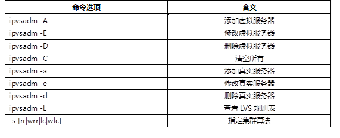
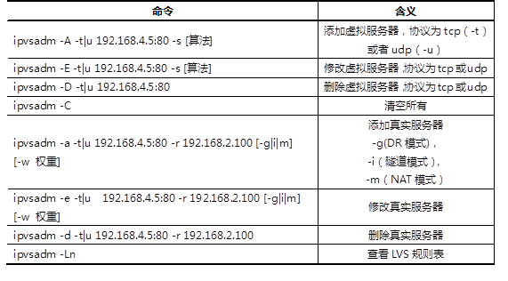
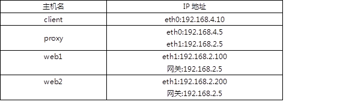
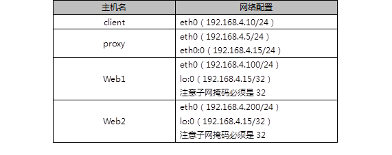

准备一台Linux服务器，安装ipvsadm软件包，练习使用ipvsadm命令，实现如下功能：
安装ipvsadm软件包，关于ipvsadm的用法可以参考man ipvsadm资料。
常用ipvsadm命令语法格式如表-1及表-2所示。
表－1 ipvsadm命令选项
表－2 ipvsadm语法案例
实现此案例需要按照如下步骤进行。
步骤一：使用命令增、删、改LVS集群规则
1）创建LVS虚拟集群服务器（算法为加权轮询：wrr）
[root@proxy ~]# yum -y install ipvsadm [root@proxy ~]# ipvsadm -A -t 192.168.4.5:80 -s wrr [root@proxy ~]# ipvsadm -Ln IP Virtual Server version 1.2.1 (size=4096) Prot LocalAddress:Port Scheduler Flags -> RemoteAddress:Port Forward Weight ActiveConn InActConn TCP 192.168.4.5:80 wrr
2）为集群添加若干real server
[root@proxy ~]# ipvsadm -a -t 192.168.4.5:80 -r 192.168.2.100 -m -w 1 [root@proxy ~]# ipvsadm -Ln IP Virtual Server version 1.2.1 (size=4096) Prot LocalAddress:Port Scheduler Flags -> RemoteAddress:Port Forward Weight ActiveConn InActConn TCP 192.168.4.5:80 wrr -> 192.168.2.100:80 Masq 1 0 0 [root@proxy ~]# ipvsadm -a -t 192.168.4.5:80 -r 192.168.2.200 -m -w 2 [root@proxy ~]# ipvsadm –a -t 192.168.4.5:80 -r 192.168.2.201 -m -w 3 [root@proxy ~]# ipvsadm –a -t 192.168.4.5:80 -r 192.168.2.202 -m -w 4
3）修改集群服务器设置(修改调度器算法，将加权轮询修改为轮询)
[root@proxy ~]# ipvsadm -E -t 192.168.4.5:80 -s rr [root@proxy ~]# ipvsadm -Ln IP Virtual Server version 1.2.1 (size=4096) Prot LocalAddress:Port Scheduler Flags -> RemoteAddress:Port Forward Weight ActiveConn InActConn TCP 192.168.4.5:80 rr -> 192.168.2.100:80 Masq 1 0 0 -> 192.168.2.200:80 Masq 2 0 0 -> 192.168.2.201:80 Masq 2 0 0 -> 192.168.2.202:80 Masq 1 0 0
4）修改read server（使用-g选项，将模式改为DR模式）
[root@proxy ~]# ipvsadm -e -t 192.168.4.5:80 -r 192.168.2.202 -g
5）查看LVS状态
[root@proxy ~]# ipvsadm -Ln
6）创建另一个集群（算法为最少连接算法；使用-m选项，设置工作模式为NAT模式）
[root@proxy ~]# ipvsadm -A -t 192.168.4.5:3306 -s lc [root@proxy ~]# ipvsadm -a -t 192.168.4.5:3306 -r 192.168.2.100 -m [root@proxy ~]# ipvsadm -a -t 192.168.4.5:3306 -r 192.168.2.200 -m
6）永久保存所有规则
[root@proxy ~]# ipvsadm-save -n > /etc/sysconfig/ipvsadm
7）清空所有规则
[root@proxy ~]# ipvsadm -C
使用LVS实现NAT模式的集群调度服务器，为用户提供Web服务：
实验拓扑结构主机配置细节如表-3所示。
表-3
使用4台虚拟机，1台作为Director调度器、2台作为Real Server、1台客户端，拓扑结构如图-1所示，注意：web1和web2必须配置网关地址。
图-1
实现此案例需要按照如下步骤进行。
步骤一：配置基础环境
1）设置Web服务器（以web1为例）
[root@web1 ~]# yum -y install httpd [root@web1 ~]# echo "192.168.2.100" > /var/www/html/index.html
2）启动Web服务器软件
[root@web1 ~]# systemctl restart httpd
3)关闭防火墙与SELinux
[root@web1 ~]# systmctl stop firewalld [root@web1 ~]# setenforce 0
步骤三：部署LVS-NAT模式调度器
1)确认调度器的路由转发功能(如果已经开启，可以忽略)
[root@proxy ~]# echo 1 > /proc/sys/net/ipv4/ip_forward [root@proxy ~]# cat /proc/sys/net/ipv4/ip_forward 1 [root@proxy ~]# echo "net.ipv4.ip_forward = 1" >> /etc/sysctl.conf #修改配置文件，设置永久规则
2）创建集群服务器
[root@proxy ~]# yum -y install ipvsadm [root@proxy ~]# ipvsadm -A -t 192.168.4.5:80 -s wrr
2）添加真实服务器
[root@proxy ~]# ipvsadm -a -t 192.168.4.5:80 -r 192.168.2.100 -w 1 -m [root@proxy ~]# ipvsadm -a -t 192.168.4.5:80 -r 192.168.2.200 -w 1 -m
3）查看规则列表，并保存规则
[root@proxy ~]# ipvsadm -Ln [root@proxy ~]# ipvsadm-save -n > /etc/sysconfig/ipvsadm
步骤四：客户端测试
客户端使用curl命令反复连接http://192.168.4.5，查看访问的页面是否会轮询到不同的后端真实服务器。
使用LVS实现DR模式的集群调度服务器，为用户提供Web服务：
说明：
CIP是客户端的IP地址；
VIP是对客户端提供服务的IP地址；
RIP是后端服务器的真实IP地址；
DIP是调度器与后端服务器通信的IP地址（VIP必须配置在虚拟接口）。
使用4台虚拟机，1台作为客户端、1台作为Director调度器、2台作为Real Server，拓扑结构如图-2所示。实验拓扑结构主机配置细节如表-4所示。
图-2
表-4
实现此案例需要按照如下步骤进行。
说明：
CIP是客户端的IP地址；
VIP是对客户端提供服务的IP地址；
RIP是后端服务器的真实IP地址；
DIP是调度器与后端服务器通信的IP地址（VIP必须配置在虚拟接口）。
步骤一：配置实验网络环境
1）设置Proxy代理服务器的VIP和DIP
注意：为了防止冲突，VIP必须要配置在网卡的虚拟接口！！！
[root@proxy ~]# cd /etc/sysconfig/network-scripts/
[root@proxy ~]# cp ifcfg-eth0{,:0}
[root@proxy ~]# vim ifcfg-eth0
TYPE=Ethernet
BOOTPROTO=none
NAME=eth0
DEVICE=eth0
ONBOOT=yes
IPADDR=192.168.4.5
PREFIX=24
[root@proxy ~]# vim ifcfg-eth0:0
TYPE=Ethernet
BOOTPROTO=none
DEFROUTE=yes
NAME=eth0:0
DEVICE=eth0:0
ONBOOT=yes
IPADDR=192.168.4.15
PREFIX=24
[root@proxy ~]# systemctl restart network
2）设置Web1服务器网络参数
[root@web1 ~]# nmcli connection modify eth0 ipv4.method manual \ ipv4.addresses 192.168.4.100/24 connection.autoconnect yes [root@web1 ~]# nmcli connection up eth0
接下来给web1配置VIP地址。
注意：这里的子网掩码必须是32（也就是全255），网络地址与IP地址一样，广播地址与IP地址也一样。
[root@web1 ~]# cd /etc/sysconfig/network-scripts/
[root@web1 ~]# cp ifcfg-lo{,:0}
[root@web1 ~]# vim ifcfg-lo:0
DEVICE=lo:0
IPADDR=192.168.4.15
NETMASK=255.255.255.255
NETWORK=192.168.4.15
BROADCAST=192.168.4.15
ONBOOT=yes
NAME=lo:0
防止地址冲突的问题：
这里因为web1也配置与代理一样的VIP地址，默认肯定会出现地址冲突；
sysctl.conf文件写入这下面四行的主要目的就是访问192.168.4.15的数据包，只有调度器会响应，其他主机都不做任何响应，这样防止地址冲突的问题。
[root@web1 ~]# vim /etc/sysctl.conf #手动写入如下4行内容 net.ipv4.conf.all.arp_ignore = 1 net.ipv4.conf.lo.arp_ignore = 1 net.ipv4.conf.lo.arp_announce = 2 net.ipv4.conf.all.arp_announce = 2 #当有arp广播问谁是192.168.4.15时，本机忽略该ARP广播，不做任何回应 #本机不要向外宣告自己的lo回环地址是192.168.4.15 [root@web1 ~]# sysctl -p
重启网络服务，设置防火墙与SELinux
[root@web1 ~]# systemctl restart network [root@web1 ~]# ifconfig [root@web1 ~]# systemctl stop firewalld [root@web1 ~]# setenforce 0
3）设置Web2服务器网络参数
[root@web2 ~]# nmcli connection modify eth0 ipv4.method manual \ ipv4.addresses 192.168.4.200/24 connection.autoconnect yes [root@web2 ~]# nmcli connection up eth0
接下来给web2配置VIP地址
注意：这里的子网掩码必须是32（也就是全255），网络地址与IP地址一样，广播地址与IP地址也一样。
[root@web2 ~]# cd /etc/sysconfig/network-scripts/
[root@web2 ~]# cp ifcfg-lo{,:0}
[root@web2 ~]# vim ifcfg-lo:0
DEVICE=lo:0
IPADDR=192.168.4.15
NETMASK=255.255.255.255
NETWORK=192.168.4.15
BROADCAST=192.168.4.15
ONBOOT=yes
NAME=lo:0
防止地址冲突的问题：
这里因为web1也配置与代理一样的VIP地址，默认肯定会出现地址冲突；
sysctl.conf文件写入这下面四行的主要目的就是访问192.168.4.15的数据包，只有调度器会响应，其他主机都不做任何响应，这样防止地址冲突的问题。
[root@web2 ~]# vim /etc/sysctl.conf #手动写入如下4行内容 net.ipv4.conf.all.arp_ignore = 1 net.ipv4.conf.lo.arp_ignore = 1 net.ipv4.conf.lo.arp_announce = 2 net.ipv4.conf.all.arp_announce = 2 #当有arp广播问谁是192.168.4.15时，本机忽略该ARP广播，不做任何回应 #本机不要向外宣告自己的lo回环地址是192.168.4.15 [root@web2 ~]# sysctl -p
重启网络服务，设置防火墙与SELinux
[root@web2 ~]# systemctl restart network [root@web2 ~]# ifconfig [root@web2 ~]# systemctl stop firewalld [root@web2 ~]# setenforce 0
步骤二：配置后端Web服务器
1）自定义Web页面
[root@web1 ~]# yum -y install httpd [root@web1 ~]# echo "192.168.4.100" > /var/www/html/index.html [root@web2 ~]# yum -y install httpd [root@web2 ~]# echo "192.168.4.200" > /var/www/html/index.html
2）启动Web服务器软件
[root@web1 ~]# systemctl restart httpd [root@web2 ~]# systemctl restart httpd
步骤三：proxy调度器安装软件并部署LVS-DR模式调度器
1）安装软件（如果已经安装，此步骤可以忽略）
[root@proxy ~]# yum -y install ipvsadm
2）清理之前实验的规则，创建新的集群服务器规则
[root@proxy ~]# ipvsadm -C #清空所有规则 [root@proxy ~]# ipvsadm -A -t 192.168.4.15:80 -s wrr
3）添加真实服务器(-g参数设置LVS工作模式为DR模式，-w设置权重)
[root@proxy ~]# ipvsadm -a -t 192.168.4.15:80 -r 192.168.4.100 -g -w 1 [root@proxy ~]# ipvsadm -a -t 192.168.4.15:80 -r 192.168.4.200 -g -w 1
4）查看规则列表，并保存规则
[root@proxy ~]# ipvsadm -Ln TCP 192.168.4.15:80 wrr -> 192.168.4.100:80 Route 1 0 0 -> 192.168.4.200:80 Route 2 0 0 [root@proxy ~]# ipvsadm-save -n > /etc/sysconfig/ipvsadm
步骤四：客户端测试
客户端使用curl命令反复连接http://192.168.4.5，查看访问的页面是否会轮询到不同的后端真实服务器。
扩展知识：默认LVS不带健康检查功能，需要自己手动编写动态检测脚本，实现该功能：(参考脚本如下，仅供参考)
[root@proxy ~]# vim check.sh
#!/bin/bash
VIP=192.168.4.15:80
RIP1=192.168.4.100
RIP2=192.168.4.200
while :
do
for IP in $RIP1 $RIP2
do
curl -s http://$IP &>/dev/vnull
web_stat=$?
ipvsadm -Ln | grep -q $IP
web_in_lvs=$?
if [ $web_stat -ne 0 -a $web_in_lvs -eq 0 ];then
ipvsadm -d -t $VIP -r $IP
elif [ $web_stat -eq 0 -a $web_in_lvs -ne 0 ];then
ipvsadm -a -t $VIP -r $IP
fi
done
sleep 1
done